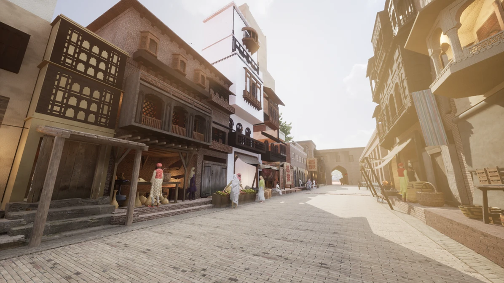
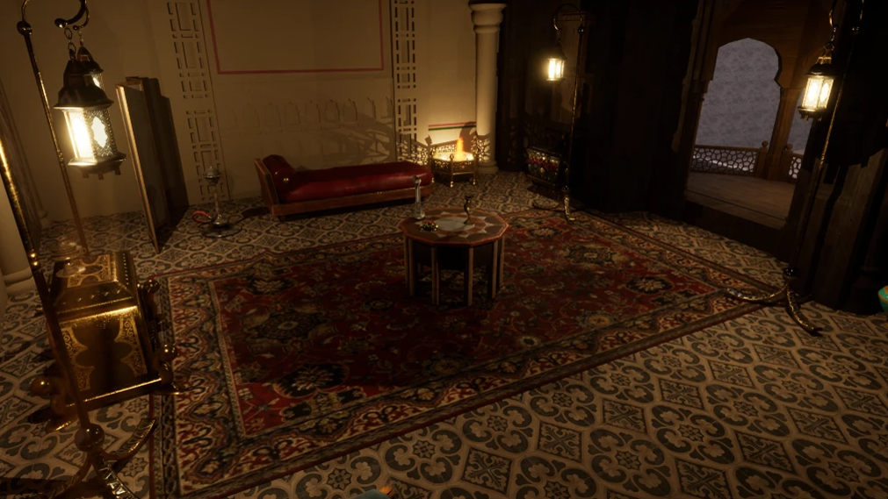
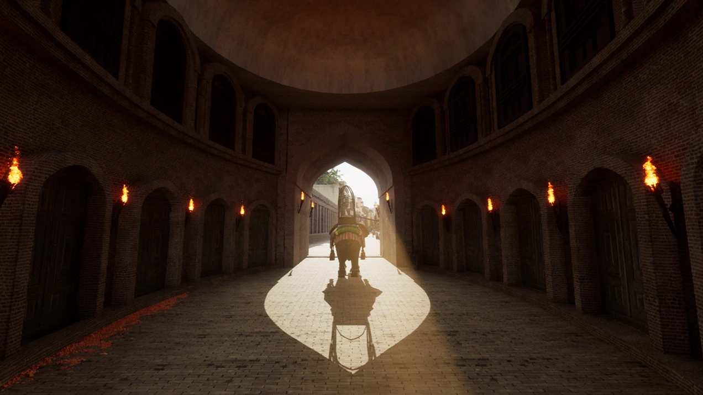
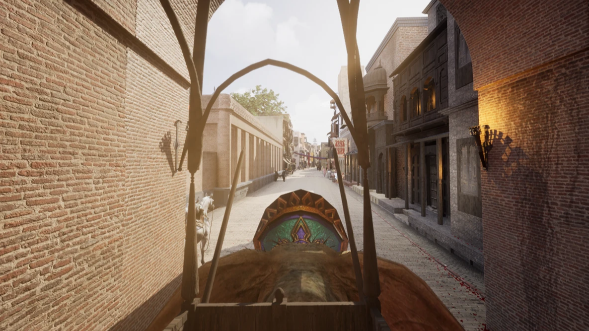
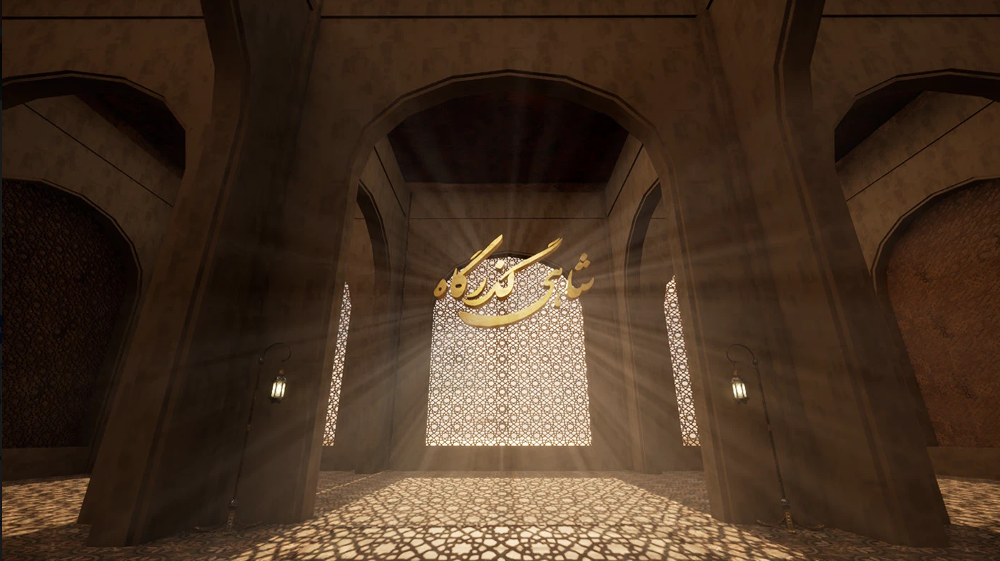

Aim
Immersion + preservation
The study aims to immerse users in a virtual Delhi Gate and nearby area, using active interaction and exploration as part of cultural heritage digitization and protection.
An immersive virtual reality experience exploring Lahore's historic Delhi Gate and its surrounding heritage environment through digital reconstruction, environmental design and visual storytelling.
The Royal Trail project was developed to immerse users in a virtual representation of Delhi Gate and its nearby area. The thesis connects historical research, environmental design, narrative and VR to explore cultural heritage digitization and protection.

The research component is presented as part of the Royal Trail case study, using the terminology and structure of the master's thesis.
The study aims to immerse users in a virtual Delhi Gate and nearby area, using active interaction and exploration as part of cultural heritage digitization and protection.
Create a lifelike representation of Delhi Gate and its surrounds that can function as a digital repository for cultural assets.
Study eighteenth-century society and use the findings to guide an environment that communicates the atmosphere of the past.
Explore texturing techniques in 3D modeling to support a realistic, authentic and interactive VR environment.
Recognize techniques, procedures, narrative components, characters and settings that contribute to historical authenticity in VR.
The thesis asks how a VR experience can be effectively designed to digitize and preserve cultural heritage, specifically Delhi Gate and its surroundings.
The thesis frames VR as a medium that can connect people with cultural heritage fragments through immersive exploration. It discusses digital replicas, educational access, research documentation and experiential learning as potential roles for virtual preservation.
Visual research, design decisions and final environment work are shown together as one coherent process.
Historical context, architecture, references, mood and narrative.
Sketches, moodboards, character studies and environment concepts.
Modeling, materials, lighting, effects and interactive environment building.
Final views, interface, environment exploration and project display.






Royal Trail is an immersive VR reconstruction of Lahore’s historic Delhi Gate and its surrounding environment, developed to explore how virtual reality can support the interpretation and preservation of cultural heritage. The project combines historical research, environmental design, 3D modelling, texturing, and immersive storytelling to recreate an experience of the Mughal-era setting.
The Royal Trail research and development documentation is based on the master's thesis report submitted at the National College of Arts. The source document is included in the downloadable website package.
Open thesis document ↗